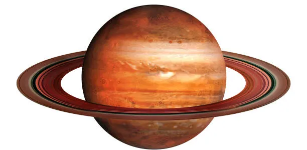

Saturn is the sixth planet from the Sun and the second-largest planet in the Solar System. Like Jupiter, Saturn is a gas giant made mostly of hydrogen and helium. It has a diameter of approximately 116,460 kilometers. Saturn is famous for its spectacular ring system, which makes it one of the most recognizable planets in the night sky.
Saturn has a thick atmosphere composed primarily of hydrogen and helium. Its upper atmosphere contains powerful winds and large storms. Saturn's clouds form bands similar to those on Jupiter, although they are generally less colorful. Temperatures in Saturn's upper atmosphere are extremely cold because of its great distance from the Sun.
Saturn does not have a solid surface. As with Jupiter, its atmosphere gradually becomes denser as you move deeper into the planet. Beneath the atmosphere are layers of liquid and metallic hydrogen surrounding a dense core. The pressure and temperature deep inside Saturn are far too extreme for humans to survive.